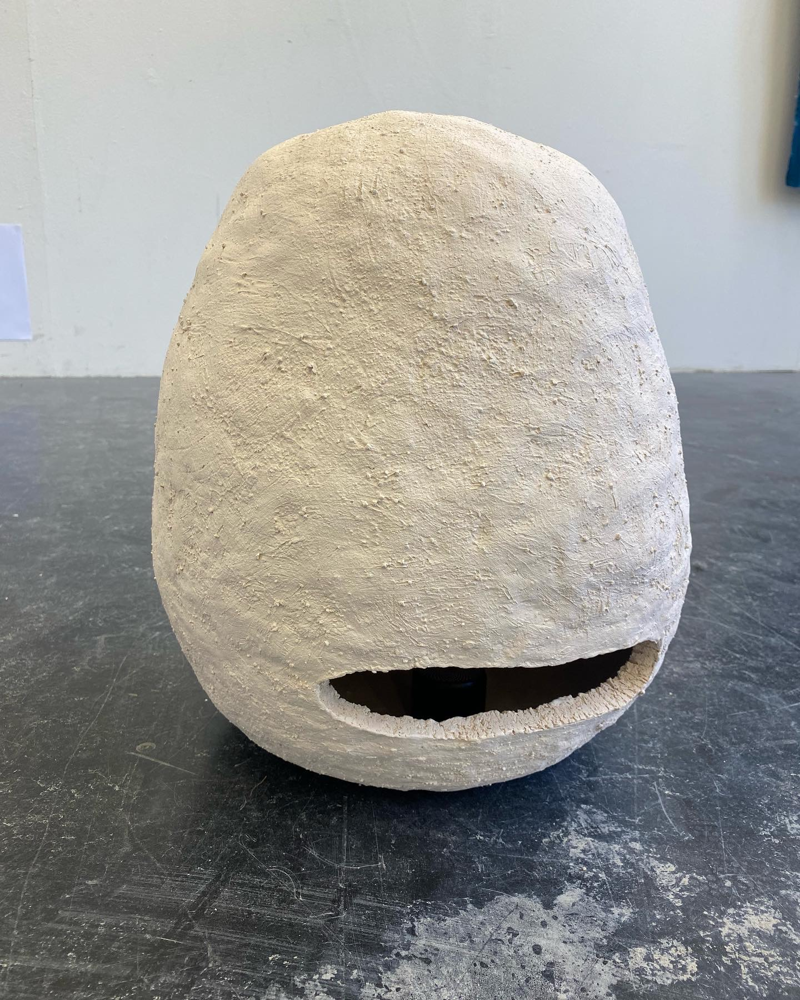
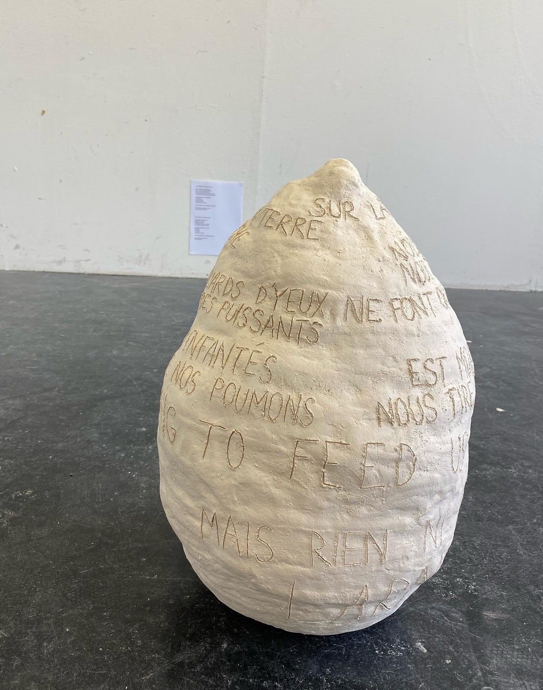

In Conversation with the voiceless, the two sculptures answer to each other. One is screaming some inarticulate sounds, the other one has words but no mouth to express them.
 Conversation avec les sans-voix
Sur la surface de cette terre
Nous n’avons pas de bouche
Nous n’avons pas de main
Nos milliards d’yeux ne font que voir
Les puissants s’emparer des puissants
La glaise qui nous a enfantés
est morte et
nous tire dans
ses profondeurs
enserre nos poumons
We are longing for something to feed us
Mais rien ne pénètre en nous
Que les larmes rouges
Conversation with the voiceless
On the face of this earth
We have no mouth
We have no hand
Our billions of eyes only see
The mighty seize the mighty
The clay that gave birth to us
died and
pulls us in
its depths
squeeze our lungs
We are longing for something to feed us
But nothing penetrates us
Than red tears